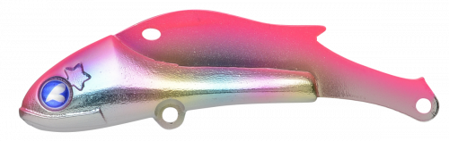
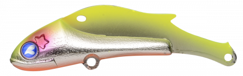
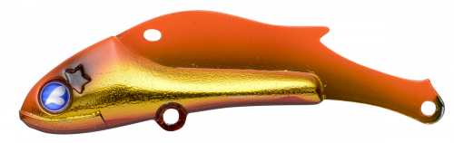
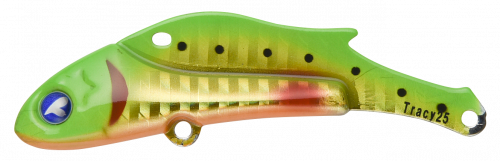

トレイシー
（Tracy）
トレイシーはBlueBlue（ブルーブルー）の鉄板バイブレーションです。
「軽い！浮かない！絡まない！」をテーマに、鉄板バイブの釣れる性能と使いやすさを突き詰めたモデル。半年間のテストではシーバスだけでなく、青物・チヌ・底物まで釣果が出て、テスターを驚かせた一本です。

画像出典:BlueBlue公式HP
スペック
- メーカー
- BlueBlue（ブルーブルー）
- タイプ
- 鉄板バイブレーション（シンキング）
- ウェイト
- 15g／25g
- フック
- #8×2（15g）／#6×2（25g）
- リング
- #2（15g）／#3（25g）
- ターゲット
- シーバス・青物・チヌ・ヒラメ・マゴチ
- 価格
- 1,550円〜（税別）
▼今すぐチェック


トレイシーの特徴
鉄板バイブの「釣れる」はそのままに、使いやすさを徹底的に追求
-
軽快な引き心地
巻き抵抗が軽く、ストレスなく巻き続けられます。一日中投げ続ける鉄板バイブだからこそ、疲れにくさは大きな武器です。
-
リトリーブもフォールも水平姿勢
リトリーブ中の水平姿勢をきっちりキープし、テンションフォールでも水平のまま。浮きあがりにくいので、狙ったレンジを外しにくくなっています。
-
フォール時の糸絡みがほとんどない
鉄板バイブで起こりがちなフォール時のライントラブルがほとんどなく、テンポよく攻め続けられます。
トレイシーの使い方
基本はただ巻き。着水後にカウントダウンして狙いのレンジまで沈め、そこから一定の速度で巻きます。
反応がないときはリフト＆フォール。ロッドで持ち上げてからテンションをかけたまま落とすと、水平姿勢のままフォールしてボトム付近の魚にもアピールできます。
トレイシーの得意な状況
港湾・河川・干潟・サーフ・磯まで、場所を選ばず使えます。ボトム付近を手早く探りたいとき、風が強くてほかのルアーが流されるとき、魚種を問わず反応を探りたいときに頼れる1本です。
ワンポイント
15gは港湾や河川、25gは遠投が必要なサーフや流れの強い場所と、飛距離と沈む速さで使い分けましょう。
トレイシーのウェイトの使い分け
| モデル | 全長／自重 | 得意な場面 |
|---|---|---|
| トレイシー15g | 15g | 港湾・河川・干潟など近〜中距離に。浅い場所でも使いやすい |
| トレイシー25g | 25g | サーフや磯など遠投が必要な場所、流れの強い場所に |
どちらも同じ水平姿勢とフォールのしやすさを持った鉄板バイブ。飛距離と沈む速さで選びましょう。
人気カラー
公式ラインナップから4色を紹介します（カラー名は公式の表記のまま）。

#03 ピンクキャンディシルバーピンク系にシルバーのフラッシング。朝夕のマズメや濁りでアピールしたいときに。

#05 チャートバックシルバーチャートの背中で視認性が高いカラー。濁りやローライトに。

#07 オレンジゴールドオレンジとゴールドで強く光るカラー。濁りの強い河川や曇りの日に。

#21 poison UBlueBlueらしい個性派カラー。定番色に反応がないときのローテーションに。
画像出典:BlueBlue公式HP
トレイシーに似ているルアー
-
 鉄PANバイブ
ジャクソン
詳細はこちら＞
鉄PANバイブ
ジャクソン
詳細はこちら＞
9g〜26gまでそろう鉄板バイブの定番。より細かくウェイトを選びたいときに。
-
 ビットブイ26
アピア
詳細はこちら＞
ビットブイ26
アピア
詳細はこちら＞
全長55mm・自重26gのバイブレーション。25gと同じクラスで、タイトなアクションで探りたいときに。
-
 ナレージ65
ブルーブルー
詳細はこちら＞
ナレージ65
ブルーブルー
詳細はこちら＞
全長65mm・自重17gのバイブレーション。同じBlueBlueで、もう少しゆっくり見せたいときに。